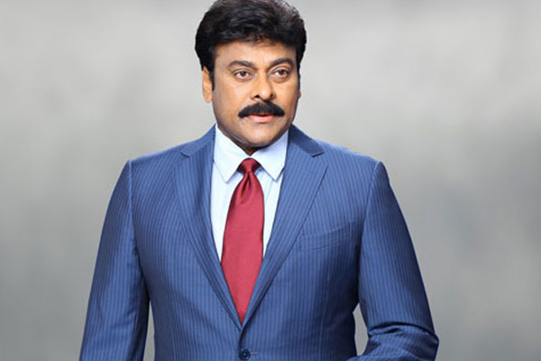
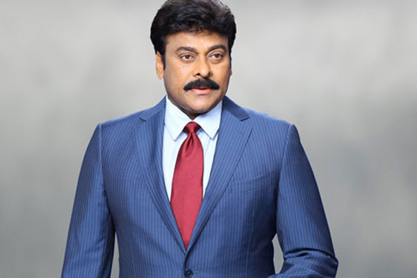
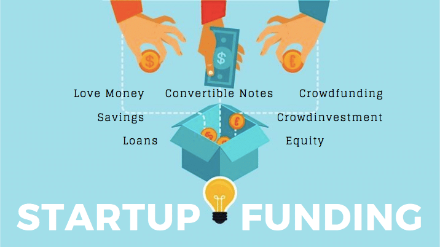

Fund Your Idea

Self-financing or personal investment is the best way of financing used by several business start-ups. Even when you take a loan or ask a venture capitalist or government entity to provide funding for your start-up, they still have this question; how much capital you shall be investing in your start-up? Investing your own savings is the best option for first-time entrepreneurs. In the later stages of business, you can easily opt for business loans and lenders shall not have a reason to deny it, as they will consider the stability of business, as it will be low-risk factor for them
committee

JD Lakshmi Narayana, IAS
Vasagiri Venkata Lakshminarayana popularly known as JD Lakshmi Narayana is an Indian retired police officer and politician from Andhra Pradesh. He served as the Additional Director General of Police in Mumbai, Maharashtra.

A.V. Ranganath, IPS
A V Ranganath, IPS, who has served as the Joint Commissioner of Hyderabad Police (Traffic), has been appointed as the new Commissioner of Warangal Police Commissionerate. An order regarding the same was issued on November 30 by the Director General of Police, Telangana. Mr. Ranganath will be taking over IPS officer Dr. Tarun Joshi, who has been transferred to the DGP office in Telangana.

K.N. Kumar, IAS
Meghalaya fisheries and community and rural development principal secretary KN Kumar has been selected for the prestigious gfiles Governance Award 2014 for his excellent/exceptional work for good governance.

Rangisetty Jagadish Babu
First associates at BITS, Pilani, and then colleagues at pharma major Navinta in the US, Jagadeesh Babu Rangisetty, 52, and Manik Reddy, 39, returned to India and founded Biophore India Pharmaceuticals in Hyderabad in 2007.